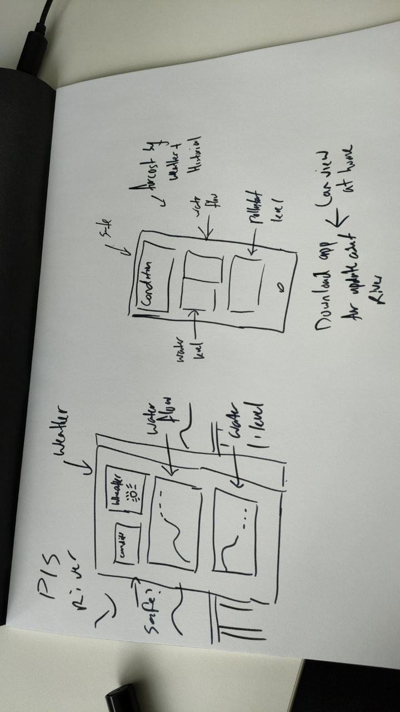
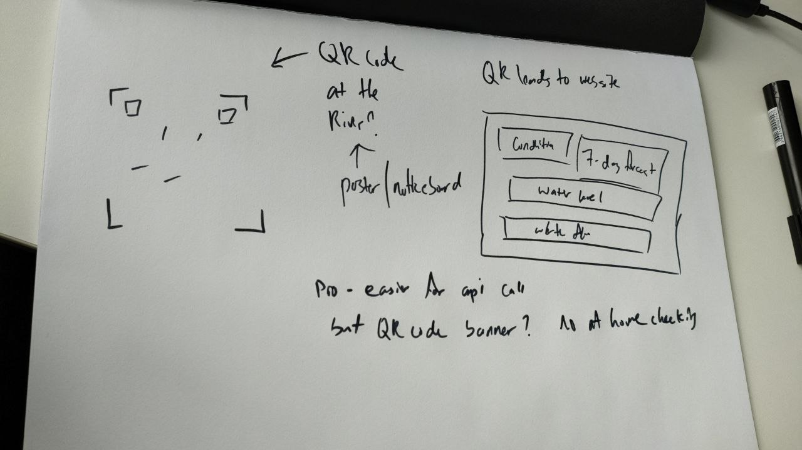
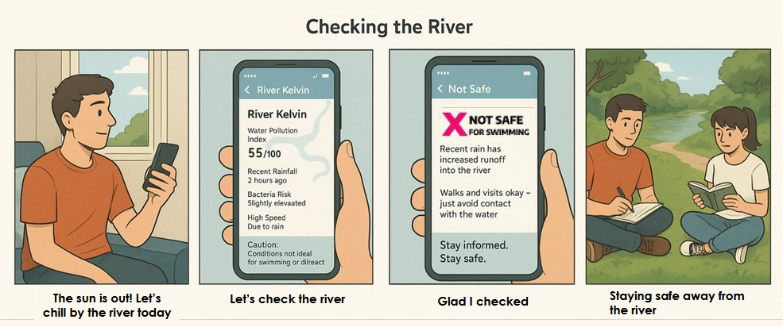
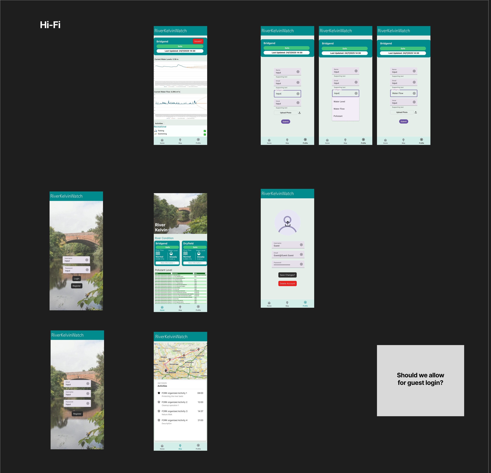
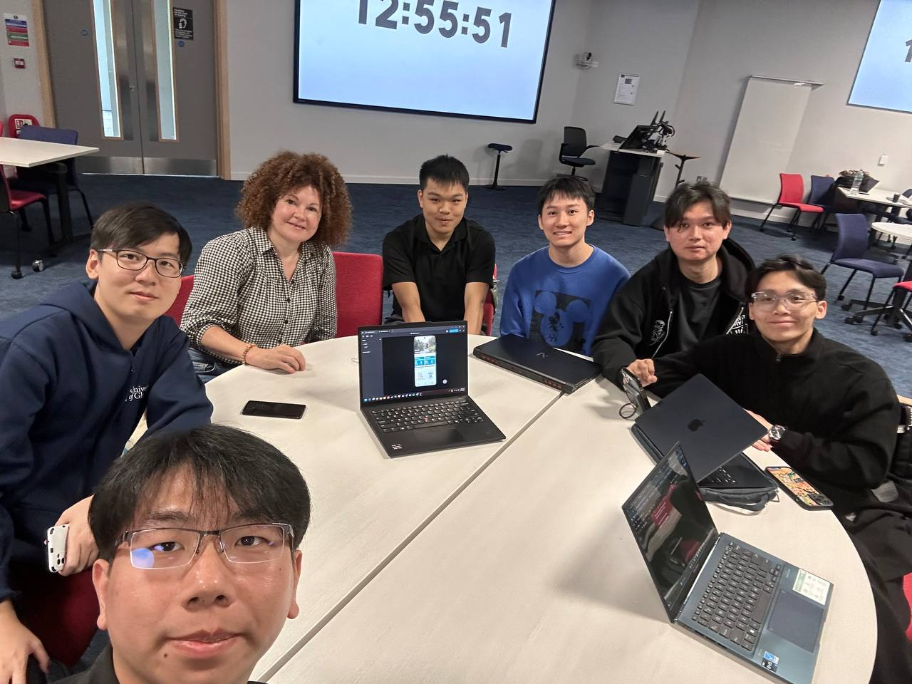
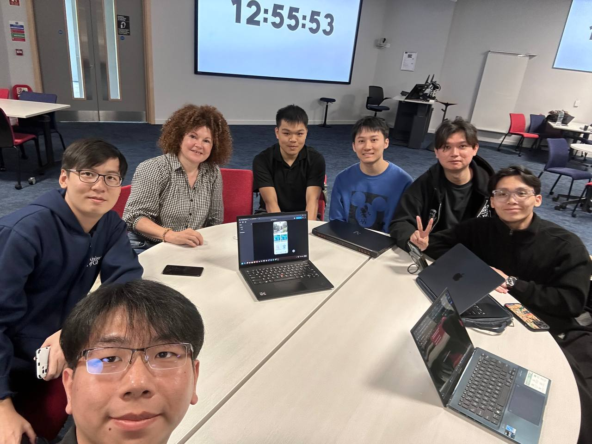
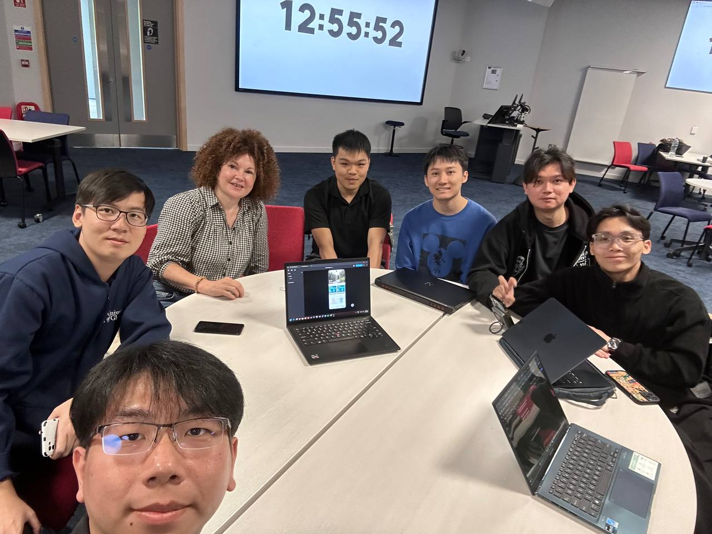

22/7/2025
In the morning, we conducted a lecture on the importance of asking the right questions. From there our team decided to sit together and brainstorm some questions, mainly focusing on clarifying the questions that we had about the questions statement.
Some of the questions we had are:
- Who is the target audience, who is going to use
- What does river condition mean?
- Are there any other data sources that we can use, other than SEPA as it seems limited.
- What are the main concerns that we should be looking out for?
The partner meeting have helped us in clarifying and understanding what the whole project is about, we also got a chance to learn something new regarding the river through the talk we had with the partner. We were quite glad that we were able to used what we learnt in class to action and was able to drill down the problem statement to better understand the requirements.
During the meeting, we also gave out suggestions of possible solutions, which was an easy-to-use mobile application. While the partner was receptive to this idea, she also suggested we look into Information Display Systems that are used on beaches to tell the public basic information.
After the meeting, we decided to first consolidate our findings from the meeting into a list in order to prevent any one person from being out of the loop and ended the day there.
23/7/2025
After lecture, we came together and list out all possible ideas during a group discussion where we came with:
- Mobile Application
- Information Display System
- QR Code + Website
The following are images of the brainstorming:
 After the brainstorming, we decided to do some research on the different ideas that we had and drawing it out, we dicuss regarding the feasibility of each idea and also the cost of making the product.
Based on what we see, the idea that cost the most would be the Information Display System (need setup and constant power source), followed by Website (need hosting) and lastly the mobile app.
24/7/2025
We first created a storyboard to better understand how the app should work, using online resources we were able to create a general process flow to better understand and see how the product should work.
After that, we created a low fidelity prototype on figma to visualize the app's possible layout and functionality.
The features are:
- General Safety Information
- Current Water Level
- Charts that show both historical data and also prediction
- Current Water Flow
- Latest River Pollution Data
Even though we had created a low fidelity prototype, we knew that there was still a lot of work to be done before it could be considered a viable product, as such we spend the rest of the day refining the prototype, removing while also adding to hopefully meet the requirements set by the partner
We also conducted our first round of groundworking, where we visited the River Kelvin after school to learn more about the place
We also found out that there is a few warning poster that is already in place, but is often hidden and dirty, with some words fading.
We also found information board, such as a bird information and also notice board, but each of them seems unused and not updated often.
From the groundworking, we were able to see that there is a need for a better way to inform the public about the river condition, as the current information is not easily noticeable and also does not seem that updated.
25/7/2025
We had a lecture regarding prototyping this morning, as such we were able to use what we learn to finetune our low fidelity prototype. At first we focus on making the feature, but we now know that we should make a bad product, to understand the pain points better to better create a new prototype.
From here, we tested our prototypes within the group, knowing that the prototype is mainly for testing our ideas, we kept testing to find issues with our initial prototype.
We also created a list of issues that we found with the prototype, such as:
- Confusing charts
- Hard to navigate
- Difficulty in understanding the rationale behind one of the features (taking photo)
From here, we planned out on what can be used and what must be fixed in our high fidelity. However, what we focus more on about was the pitch video as it was due to this day.
Throughout the week, we had already created a powerpoint presentation and so while some of us were planning out the high fidelity prototype, others were working on the presentation and scripts.
Pitch Video
28/07/2025
We began the day by first confirming the features that we wanted to have in our product and then began the creation of our high fidelity prototype. We similar used figma to design and plan out the navigation of the app, through out the development, we faced some issues as we did not really understand how to use the more advanced features of figma. However, luckily the internet is there to help us and we were able to create a initial high fidelity prototype.
After the creation, we spotted some issue with the navigation and also how it should start up, from there we began further discussion to get everyone on the same page and also to vote on what should be done
We also found out that the pollution chart might be a little too confusing from people to understand, as such we began creating another home screen to try do an A/B testing
The current issue that we have now is that we need client feedback to better improve our prototypes.
29/07/2025
Today we received the feedback for our first pitch video, it was mostly positive, however the issue came with the understanding of the problem statement and also the project requirements, where we did not show enough regarding the forecasting and prediction of river kelvin. As such we decided to include them into our high fidelity prototype, making it more obvious for users to use and predict future conditions.
We also have started the initial draft of our poster, which is currently a work in progress, where we plan to focus more on selling the product than explaining what it does.
.jpg)
30/07/2025
We continue redesigning the app, mainly changing how the forecasting works. After doing some internal test run, we found out that the readability of the forecast was not that good, as such we tested different version and settle for one that just overrides the entire page to the forecast frame.
Our group have come to the understanding that no matter what there is still rooms for improvement and also that we should keep refining the prototype until it is more usable and when we are satisfied with it.
We were also able to create a second draft of the poster and also created a logo for our mobile application.
31/07/2025
Today, we conducted our second and possibly last partner meeting. The main focus for this meeting was to showcase our chosen high-fidelity prototype and gather final feedback from our partners.
We were given a few feedbacks on what we should look out for:
- We need to think about ways to reach out to people, ask why would they use this app?
- It would be nice if there are QR codes to link to both our Instagram and website.
- We should consider adding a news section to keep users updated.
We also talk quite a bit about the current ways they have looking at pollution and how it should be integrates with the app.
  After the meeting, we asked some of our classmate to try testing the app to gather further feedback
- The label are confusing, there should be a way for us to know what each of them means
- Some of the charts were clipping through
- Talking about the community tabs, there should be a way to click into it as there is no way for them to scan the QR as it is a mobile app
01/08/2025
Summary
We spent the day finalizing the pitch video slides and recording the voiceover. We also made sure to incorporate the feedback we received from our partner meeting into our prototype.
Pitch Video
04/08/2025
Summary
05/08/2025
Summary
06/08/2025
Summary
07/08/2025
Summary
08/08/2025
Summary